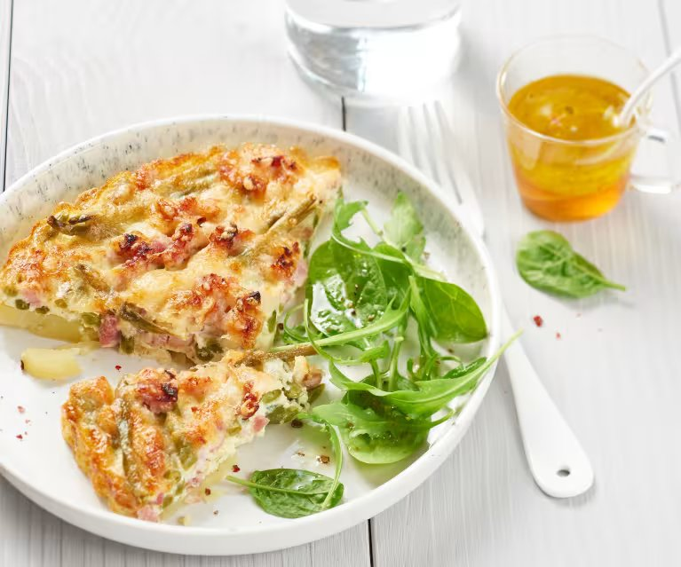

Quiche sans pâte aux haricots verts et pommes de terre
Ingrédients
4×
- 80 g d'emmental
- 500 g d'eau
- 250 g de haricots verts
- 340 g de pommes de terre
- 100 g d'oignon
- 300 g de lardons fumés
- 3 oeufs
- 250 g de crème liquide
- 2 pincées de sel
- 3 pincées de poivre blanc

Préparation
Étape 1
Râper 80 g d'emmental 5 sec/vitesse 10. Réserver.
Étape 2
Mettre 500 g d'eau dans le bol, 250 g de haricots verts et 340 g de pommes de terre non épluchées dans le panier. Cuire à la vapeur 25 min/Varoma/vitesse 1.
Étape 3
Laisser refroidir, éplucher les pommes de terre et les couper en rondelles. Garnir un moule à tarte (Ø 22 cm) avec les pommes de terre puis les haricots.
Étape 4
Préchauffer le four à 190ºC. Hacher 100 g d'oignon 5 sec/vitesse 5. Ajouter 300 g de lardons fumés et cuire 4 min/90ºC/sens inverse/vitesse mijotage. Égoutter et répartir sur les légumes.
Étape 5
Mélanger 3 oeufs, 250 g de crème liquide, 2 pincées de sel et 3 pincées de poivre blanc 40 sec/vitesse 3. Verser sur les légumes et parsemer d’emmental.
Étape 6
Cuire 25 à 30min à 190ºC.
Résumé
80 g d'emmental
Râper 5 sec/vitesse 10
500 g d'eau
250 g de haricots verts
340 g de pommes de terre
Cuire à la vapeur 25 min/Varoma/vitesse 1
éplucher couper
100 g d'oignon
300 g de lardons fumés
190ºC Hacher 5 sec/vitesse 5 cuire 4 min/90ºC/sens inverse/vitesse mijotage
3 oeufs
250 g de crème liquide
2 pincées de sel
3 pincées de poivre blanc
Mélanger 40 sec/vitesse 3
Cuire 190ºC